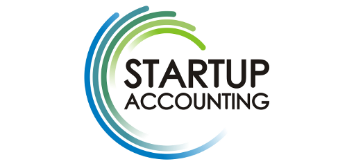

Acerca
A Startup Accounting existe para juntamente
com os founders da empresa medir o seu desempenho em cada momento
da sua criação.
As demonstrações financeiras
produzidas pela contabilidade são úteis para a avaliação da
empresa numa fase mais avançada da mesma e quando esta se
encontrar a laborar em "velocidade cruzeiro".
O que propomos é ter alguém que se dedique
às métricas da empresa, deixando os founders dedicar todo o seu
tempo ao principal: O produto e os clientes.
Valores
Inovação: O progresso e o
futuro vêm da inovação.
Felicidade: Não é possível fazer um
bom trabalho quando não se está feliz.
Tempo e Família: A produtividade
depende destes dois factores, bem como a felicidade. A gestão
destes valores com o trabalho é essencial.
Criação: Nós acreditamos na criação
de valor para a sociedade ou para uma organização. Não
acreditamos numa entidade divina com a obrigação de criar
emprego.
Missão
Não permitir que boas ideias e projetos se
percam porque os seus autores e executantes não tiveram a
capacidade de gerir administrativamente a sua startup e fazer
parte de excelentes equipas que queiram construir excelentes
produtos.
Visão
Sermos reconhecidos na comunidade como
especialistas na análise e gestão de startups, da área da
tecnologia, internet e telecomunicações.
Obter ganhos da venda de sweat equity de 5
startups até ao final de 2016.
Nós não somos:
Consultores, especialistas de startups,
aceleradores de startups, fábrica de startups, especialistas em
empreendorismo, angariadores de capital de risco.